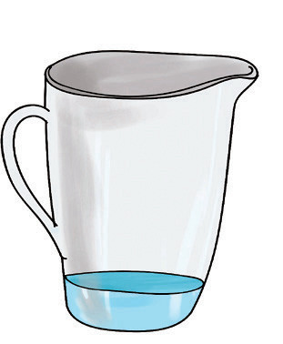
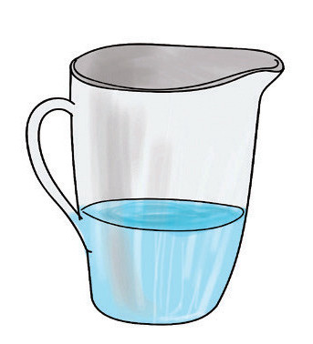
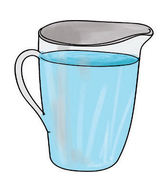
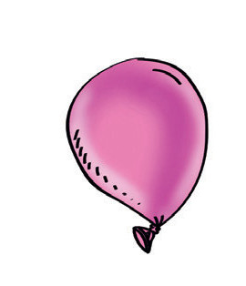
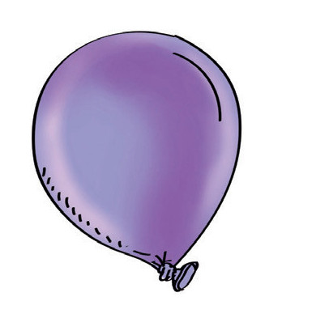
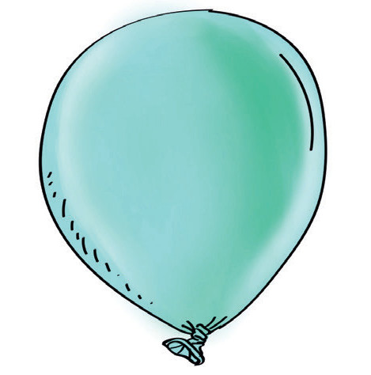

Kielelezo namba 2: Majagi yenye kimiminika
Kielelezo namba 2 kinaonesha majagi yenye maji. Chombo chenye umbo kubwa kina ujazo mkubwa kuliko chenye umbo dogo.
3. Gesi: Haina umbo maalumu na ni nyepesi zaidi kuliko yabisi na kimiminika.



Kielelezo namba 3: Maputo yenye gesi
Kielelezo namba 3 kinaonesha maputo yenye hewa (gesi) na ujazo tofauti. Hewa hutunzwa katika vitu yabisi. Kadiri unavyojaza hewa kwenye maputo ukubwa wa maputo huongezeka.
Hivyo, jiwe, maji na hewa ni baadhi ya aina za maada.